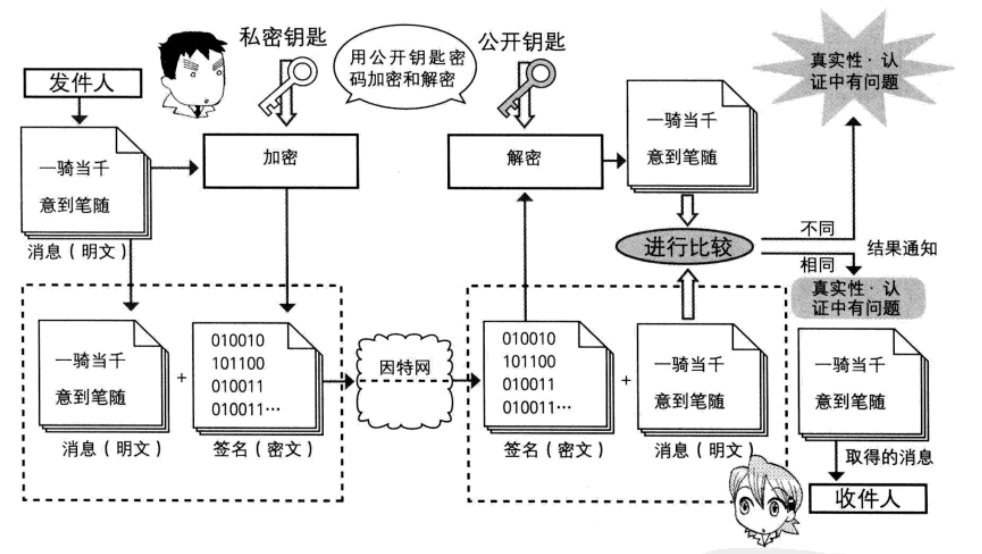

一、网络安全基本概念
信息安全防护的目标有：
保密性 Confidentiality
信息不泄露给非授权用户、实体或过程，或供其利用的特性。
完整性 Integrity
数据未经授权不能进行改变的特性。即信息在存储或传输过程中保持不被修改、不被破坏和丢失的特性。
可用性 Usability
可被授权实体访问并按需求使用的特性。即当需要时能否存取所需的信息。例如网络环境下拒绝服务、破坏网络和有关系统的正常运行等都属于对可用性的攻击；
可控制性Controlability
对信息的传播及内容具有控制能力。
不可抵赖性 Non-repudiation
不可抵赖性包括对自己行为的不可抵赖及对行为发生的时间的不可抵赖。通过进行身份认证和数字签名可以避免对交易行为的抵赖，通过数字时间戳可以避免对行为发生的抵赖。
对于运维工程师最关键的两个工作职责：保证数据安全性、保证高可用性
安全防护环节
物理安全：各种设备/主机、机房环境
系统安全：主机或设备的操作系统
应用安全：各种网络服务、应用程序
网络安全：对网络访问的控制、防火墙规则
数据安全：信息的备份与恢复、加密解密
管理安全：各种保障性的规范、流程、方法
生产环境中可能遇到的安全攻击
Spoofing 假冒
假冒指的是某个实体（人或系统）发出含有其他实体身份信息的数据信息，假扮成其他实体，从而以欺骗方式获取一些合法用户的权利和特权。
Tampering 篡改
篡改消息是指一个合法消息的某些部分被改变、删除，消息被延迟或改变顺序，通常用以产生一个未授权的效果。如修改传输消息中的数据，将“允许甲执行操作”改为“允许乙执行操作”。
Repudiation 否认
Information Disclosure 信息泄漏
窃听是网络攻击中最常用的手段。目前应用最广泛的局域网上的数据传送是基于广播方式进行的，这就使一台主机有可能受到本子网上传送的所有信息。
Denial of Service 拒绝服务
拒绝服务即常说的DoS（Deny of Service），会导致对通讯设备正常使用或管理被无条件地终端。通常是对整个网络实施破坏，以达到降低性能、终端服务的目的。这种攻击也可能有一个特定的目标，如到某一特定目的地（如安全审计服务）的所有数据包都被组织。
Elevation of Privilege 提升权限
黑客可能通过一些漏洞来执行一些远程代码，来在你的系统中得到权限，当黑客得到管理者权限之后，就会通过一些特权命令或者提全程序来得到root权限。来达到控制你的系统的目的。
二、加密技术
加密技术是电子商务采取的基本安全措施，交易双方可根据需要在信息交换的阶段使用。加密技术分为两
类，即对称加密和非对称加密。
###
1.对称加密
对称加密：加密key1与解密key2用的是用一把密钥
优势：速度快、效率高，适合加密大量的数据
特性：将原始数据分割成固定大小的块，逐个进行加密
缺点：密钥过多；密钥分发；数据来源无法确认
算法：DES、3DES、AES、Blowfish、Twofish、IDEA、RC6、CAST5等
对称加密命令：
1）gpg命令：
对称加密file文件
gpg -c file
ls file.gpg
在另一台主机上解密file
gpg -o file -d file.gpg
2）openssl命令：
对称加密：
工具：openssl enc, gpg
算法：3des, aes, blowfish, twofish
enc命令：
帮助：man enc
加密：
openssl enc -e -des3 -a -salt -in testfile
-out testfile.cipher
解密：
openssl enc -d -des3 -a -salt –in testfile.cipher
-out testfile
openssl ?
2.非对称加密
使用一对密钥来分别完成加密和解密操作，其中一个公开发布（即公钥），另一个由用户自己秘密保存（即私钥）
举例来讲，Alice要与Bob进行通信：
Alice —> Bob
Alice：public-A（公钥），secret-A（私钥）
Bob：public-B（公钥），secret-B（私钥）
公钥公开，私钥不可公开，只有自己有
公钥加密—>需要对应私钥解密
优点：解决了对称加密无法确认数据来源，密钥过多的缺点
缺点：加密效率低、速度慢、密码长，适合加密较小的数据
算法：RSA（加密、数字签名），DSA（数字签名），ELGamal
data—加密Pb（data）—解密Sb{Pb（data）}—data 加密功能
data—加密Sa（data）—解密Pa{Sa（data）}—data 数据来源功能
非对称算法DES和**对称算法RSA**和大概对应关系：
加密算法 文件大小 加密后大小 加密所需时间 解密所需时间
DES 1G 2G 4m 8m
RSA 1G 1G 1m 64hour
非对称加密命令：
1）gpg命令：
在hostB主机上用公钥加密，在hostA主机上解密
在hostA主机上生成公钥/私钥对
注：此步骤必须在图形界面下进行
gpg –gen-key rng_tools
在hostA主机上查看公钥
gpg –list-keys
在hostA主机上导出公钥到wang.pubkey
gpg -a –export -o wang.pubkey
从hostA主机上复制公钥文件到需加密的B主机上
scp wang.pubkey hostB:
在需加密数据的hostB主机上生成公钥/私钥对
gpg –list-keys
gpg –gen-key
在hostB主机上导入公钥
gpg –import wang.pubkey
gpg –list-keys
用从hostA主机导入的公钥，加密hostB主机的文件file,生成file.gpg
gpg -e -r wangx file
file file.gpg
复制加密文件到hostA主机
scp fstab.gpg hostA:
在hostA主机解密文件
gpg -d file.gpg
gpg -o file -d file.gpg
删除公钥和私钥
gpg –delete-keys wangx
gpg –delete-secret-keys wangx
2）openssl命令：
生成密钥对：man genrsa
生成私钥
openssl genrsa -out /PATH/TO/PRIVATEKEY.FILE NUM_BITS
(umask 077; openssl genrsa –out test.key –des 2048)
openssl rsa -in test.key –out test2.key 将加密key解密
从私钥中提取出公钥
openssl rsa -in PRIVATEKEYFILE –pubout –out PUBLICKEYFILE
openssl rsa –in test.key –pubout –out test.key.pub
三、认证技术
认证技术是用电子手段证明发送者和接收者身份及其文件完整性的技术，即确认双方的身份信息在传送或存储过程中未被篡改过。
要想解释数字签名的原理，先来了解hash单向散列和digest摘要概念：
单向散列：将任意数据缩小成固定大小的“指纹”
特性：
任意长度输入
固定长度输出
若修改数据，指纹也会改变（“不会产生冲突”）
法从指纹中重新生成数据（“单向”）
功能：数据完整性
常见hash算法：
md5: 128bits、sha1: 160bits、sha224
sha256、sha384、sha512
常用工具：
md5sum | sha1sum [ –check ] file
openssl、gpg
rpm -V
digest摘要=hash（data）
经过hash算法得出的结果我们称为摘要，摘要单向不可推，即只拿到摘要digest是无法反推出数据的
特性：数据不变，摘要不变；数据有小变化，则摘要完全改变，雪崩效应
digest长度固定大小
md5：128
shal：160
1.数字签名
数字签名：对数据进行hash计算后的摘要进行私钥加密。
也称电子签名，如同出示手写签名一样，能起到电子文件认证、核准和生效的作用。
即：Sa{hash（data）}
数字证书完整流程：
客户端：
1.对原文进行hash运算得到摘要digest
hash（data）
2.将摘要用本方私钥加密得到数字签名
Sa{hash（data）}
3.连同原文同签名一起发送
data+Sa{hash（data）}
服务器端：
1.接收到原文与签名后，用客户端公钥解锁摘要
pa–>hash（data）
2.再对原文进行hash计算
hash（data）
3.计算后的摘要与解锁摘要对比；如相同，则未被篡改；如不同，则发生过篡改
pa–>hash（data）对比 hash（data）
2.数字证书
数字证书是一个经证书授权中心（CA）数字签名的包括公钥拥有者信息以及公钥的文件。
数字证书的最主要构成包括一个用户公钥，加上密钥所有者的用户身份标识符，以及用户信任的证书权威机构（CA）签名
数字证书相关概念：
签证机构：CA（Certificate Authority）
注册机构：RA
证书吊销列表：CRL
X.509：定义了证书的结构以及认证协议标准
版本号
序列号
签名算法
颁发者
有效期限
主体名称
根CA：普通CA上端还有其他CA认证，一个CA认证链的最顶端称为根CA或Root CA，Root CA自己给自己签名。
数字证书类型：
普通域名证书：www.tmall.com 只签名一个网站地址
泛域名证书：*.tmall.com 签名一类网站地址
数字证书获取：
a）使用证书授权机构
生成签名请求（csr）
将csr发送给CA
从CA处接收签名
b）自签名的证书
自己签发自己的公钥
适用于公司内部网络加密，互联网中不认可
四、安全套接层协议SSL与OpenSSL
SSL协议位于传输层和应用层之间，由SSL记录协议、SSL握手协议和SSL警报协议组成的。
SSL握手协议被用来在客户与服务器真正传输应用层数据之前建立安全机制。当客户与服务器第一次通信时，双方通过握手协议在版本号、密钥交换算法、数据加密算法和Hash算法上达成一致，然后互相验证
对方身份，最后使用协商好的密钥交换算法产生一个只有双方知道的秘密信息，客户和服务器各自根据此秘密信息产生数据加密算法和Hash算法参数。
SSL记录协议根据SSL握手协议协商的参数，对应用层送来的数据进行加密、压缩、计算消息鉴别码MAC，然后经网络传输层发送给对方。
SSL警报协议用来在客户和服务器之间传递SSL出错信息。
Record 协议：包括对消息的分段、压缩、消息认证和完整性保护、加密等
HTTPS 协议：就是“HTTP 协议”和“SSL/TLS 协议”的组合。HTTP over
SSL”或“HTTP over TLS”，对http协议的文本数据进行加密处理后，成为二
进制形式传输
OpenSSL：
OpenSSL 是一个安全套接字层密码库，囊括主要的密码算法、常用的密钥和证书封装管理功能及SSL协议，并提供丰富的应用程序供测试或其它目的使用。
三个组件：
openssl：多用途的命令行工具，包openssl
libcrypto：加密算法库，包openssl-libs
libssl：加密模块应用库，实现了ssl及tls，包nss
openssl命令：
两种运行模式：交互模式和批处理模式
openssl version：程序版本号
标准命令、消息摘要命令、加密命令
标准命令：
enc, ca, req, …
对称加密与非对称加密命令上面已经提到，介绍下openssl的其他功能：
单向加密：
工具：md5sum, sha1sum, sha224sum,sha256sum…
openssl dgst
dgst命令：
帮助：man dgst
openssl dgst -md5 [-hex默认] /PATH/SOMEFILE
openssl dgst -md5 testfile
md5sum /PATH/TO/SOMEFILE
MAC: Message Authentication Code，单向加密的一种延伸应用，用于实现
网络通信中保证所传输数据的完整性机制
CBC-MAC
HMAC：使用md5或sha1算法
生成用户密码：
passwd命令:
帮助：man sslpasswd
openssl passwd -1 -salt SALT(最多8位)
openssl passwd -1 –salt centos
生成随机数：
帮助：man sslrand
openssl rand -base64|-hex NUM
NUM: 表示字节数；-hex时，每个字符为十六进制，相当于4位二进制，出现的字符数为NUM*2
随机数生成器：伪随机数字
键盘和鼠标，块设备中断
/dev/random：仅从熵池返回随机数；随机数用尽，阻塞
/dev/urandom：从熵池返回随机数；随机数用尽，会利用软件生成伪随机数,非阻塞
五、操作：搭建私有根CA，并向CA申请证书
一、建立Root CA
1.生成私钥
vim /etc/pki/tls/openssl.conf
(umask 066;openssl genrsa -out /etc/pki/CA/private/cakey.pem 4096)
2.自签名证书
openssl req -new -x509 -key /etc/pki/CA/private/cakey.pem -out /etc/pki/CA/cacert.pem -days 3650
-x509代表自己给自己前面
交互式填写：
国家：CN
省份：beijing
城市：beijing
公司名称：magedu
部门：M30
Common name：Magedu.com
查看生成的签名证书
openssl x509 -in cacert.pem -noout -text
二、用户或服务器
1.生成私钥
（umask 066；openssl genrsa -out app.key 1024）
2.生成证书申请
openssl req -new -key app.key -out app.csr
交互式填写：
国家：CN
省份：beijing
城市：beijing
公司名称：magedu
部门：M30
Common name：app.Magedu.com
注：国家，省份，公司必须一致才能申请成功
3.将申请文件发给CA
scp app.csr CA:IP
三、CA颁发证书
touch /etc/pki/CA/index.txt 建立已颁发证书信息列表文件；V：生效；R：吊销；
echo 0F > /etc/pki/CA/serial 建立证书序列号
openssl ca -in app.csr -out /etc/pki/CA/certs/app.crt -days 100
四、证书发送给客户端
scp app.crt Client:IP
五、应用软件使用证书